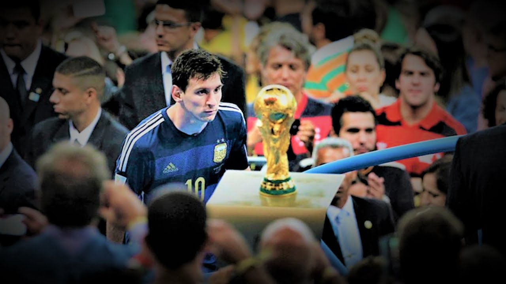
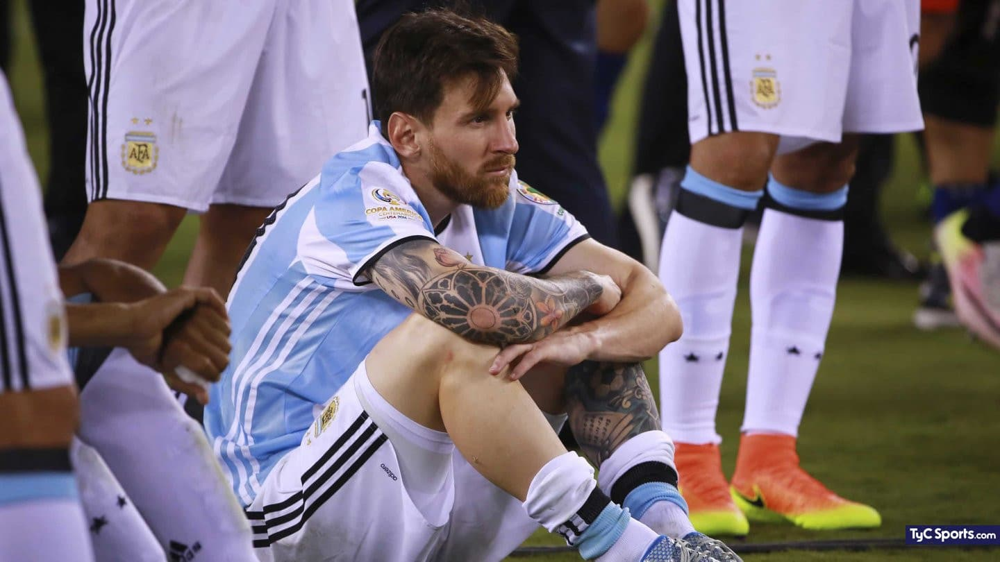
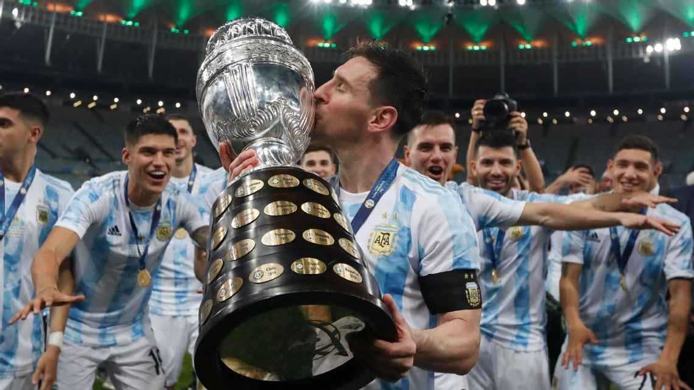

LA MEMORIAALBICELESTE
Una historia que sigue contigoSigue bajando para recorrerla

Una camiseta.
Toda una vida.
Del dieciocho al diez. El sueño apenas empezaba.

Tan cerca.
Tan lejos.
A un partido de la copa. Otra vez, el sueño queda del otro lado.

Pero volvió.
Se fue. Le dolió. Y volvió. Esta vez, con un equipo a su lado.

El abrazo que
tardó una vida.
En el mismo estadio de la derrota, Messi por fin levanta una copa.
El mundo cabe
en sus manos.
Campeones del mundo. Para siempre.
Explorar la finalScroll vertical → viaje horizontal
¿Este es el recorrido?
Esto es lo que aprobarías: tipografía, fotos, orden de lectura, portada vertical y galería horizontal con profundidad. La prueba usa cinco momentos; después se extiende al resto del landing.
Tu decisión se prepara aquí. Cópiala al chat para que la pueda aplicar.Referencias y alcance de esta prueba
HTML y GSAP con recursos locales. Se reutilizan las fotografías y fuentes del proyecto. Este prototipo está separado del landing actual.